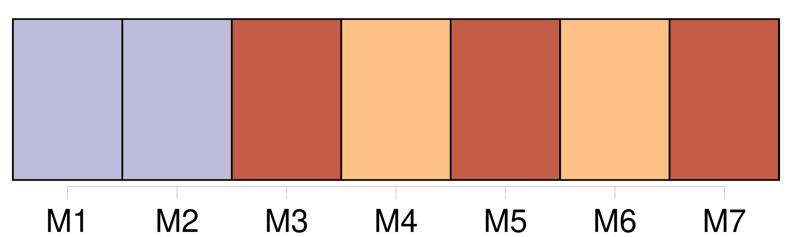

Longueur nb maillons : 16 mentions |
  |
»
C'est à ce moment que se rattache une anecdote que nous raconte [Charles] dans [ses] mémoires. « Nous étions, nous dit [-il] , chez un ex-jésuite dont le talent consistait à faire croire aux parens que leurs enfans étaient ou des vauriens ou des sots. Il y réussissait si bien que, quoique nous fussions roués de coups et affamés, il fallut trois ans pour que [mes parens] fussent désabusés sur le compte de cet homme. [2 phrases] Comme [je] connaissais les êtres de la maison, [mon premier soin] en arrivant fut de chercher de quoi manger, [je] trouvai un pain, la joie fut grande ; [j'] oublie tout, [j'] arrive sur le théâtre au milieu de la représentation et tenant [mon pain] , [je] crie à [mon frère] : « Juste!! [3 phrases]
On veut savoir ce que cela signifie, [j'] explique que nous mourons de faim ; il était difficile de ne pas nous croire … [1 phrases] [Je] crois que [je] ne savais ni lire ni écrire couramment …… |
La ressource peut être téléchargée sur la page Ortolang
Si vous avez des questions ou vous voyez des erreurs, merci d'envoyer un mail à silvia.federzoni89@gmail.com
Site développé par S. Federzoni (contact)